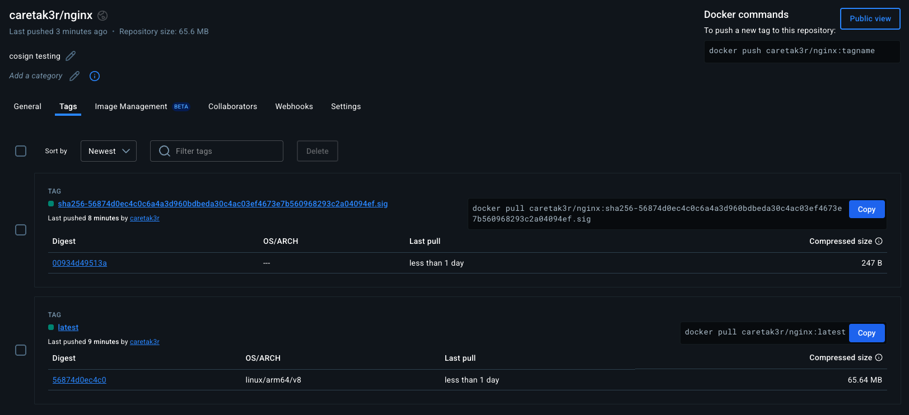
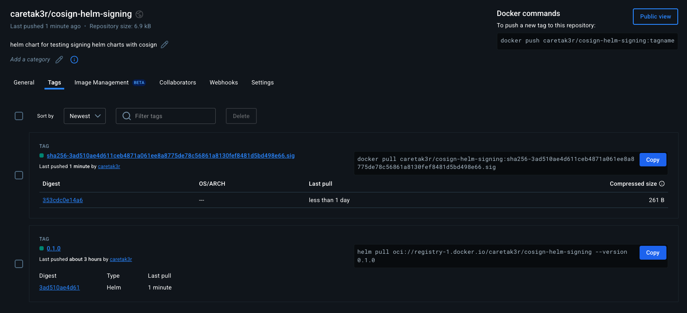

What is Cosign?
Cosign is a tool developed by the Sigstore project that provides a simple way to sign and verify software artifacts. It’s particularly useful for container images, Helm charts, and other software artifacts in the supply chain. Cosign uses keyless signing by default, which means it doesn’t require you to manage private keys. Instead, it leverages OpenID Connect (OIDC) for authentication and uses ephemeral keys for signing.
Prerequisites
Before we begin, ensure you have the following tools installed:
- Cosign
- Helm
- Docker
- A container registry (like Docker Hub, GitHub Container Registry, or Google Container Registry)
For the purposes of this post, I am going to generate and use static keypairs, instead of keyless or any cloud provider-specific KMS implementation, but those all work as well.
Step 1: Signing a Docker Image
First, let’s sign the Docker image that our Helm chart will use:
# Build your Docker image
docker build -t caretak3r/nginx:latest .
# Push the image to your registry
docker push caretak3r/nginx:latest
# Sign the image using Cosign
cosign sign --key cosign.key caretak3r/nginx:latest
# Sign the image digest instead of the tag
cosign sign --key cosign.key caretak3r/nginx@sha256:56874d0ec4c0c6a4a3d960bdbeda30c4ac03ef4673e7b560968293c2a04094ef
The output would look like this:
Enter password for private key:
The sigstore service, hosted by sigstore a Series of LF Projects, LLC, is provided pursuant to the Hosted Project Tools Terms of Use, available at https://lfprojects.org/policies/hosted-project-tools-terms-of-use/.
Note that if your submission includes personal data associated with this signed artifact, it will be part of an immutable record.
This may include the email address associated with the account with which you authenticate your contractual Agreement.
This information will be used for signing this artifact and will be stored in public transparency logs and cannot be removed later, and is subject to the Immutable Record notice at https://lfprojects.org/policies/hosted-project-tools-immutable-records/.
By typing 'y', you attest that (1) you are not submitting the personal data of any other person; and (2) you understand and agree to the statement and the Agreement terms at the URLs listed above.
Are you sure you would like to continue? [y/N] y
tlog entry created with index: 212124369
Pushing signature to: index.docker.io/caretak3r/nginx
Taking a look at DockerHub (ECR, or any other OCI registries will work, too) you can see a .sig file was created:

When you run the cosign sign command for the first time, it will:
- Open your browser for OIDC authentication
- Generate an ephemeral key pair
- Sign the image
- Upload the signature to the registry
Step 2: Signing a Helm Chart
Now, let’s sign the Helm chart:
# Package your Helm chart
helm package cosign-helm-signing/
# Sign the chart using Cosign
cosign sign-blob --key cosign.key cosign-helm-signing-0.1.0.tgz --bundle cosign-helm-signing-0.1.0.tgz.sig
# Push the Helm chart to dockerHub
helm registry login registry-1.docker.io
# Push the chart
helm push cosign-helm-signing-0.1.0.tgz oci://registry-1.docker.io/caretak3r
> Pushed: registry-1.docker.io/caretak3r/cosign-helm-signing:0.1.0
> Digest: sha256:3ad510ae4d611ceb4871a061ee8a8775de78c56861a8130fef8481d5bd498e66
# Sign the chart
cosign sign-blob --key cosign.key registry-1.docker.io/caretak3r/cosign-helm-signing@sha256:3ad510ae4d611ceb4871a061ee8a8775de78c56861a8130fef8481d5bd498e66
cosign sign --key cosign.key index.docker.io/caretak3r/cosign-helm-signing@sha256:3ad510ae4d611ceb4871a061ee8a8775de78c56861a8130fef8481d5bd498e66
Output for signing the blob looks like this:
Using payload from: cosign-helm-signing-0.1.0.tgz
Enter password for private key:
The sigstore service, hosted by sigstore a Series of LF Projects, LLC, is provided pursuant to the Hosted Project Tools Terms of Use, available at https://lfprojects.org/policies/hosted-project-tools-terms-of-use/.
Note that if your submission includes personal data associated with this signed artifact, it will be part of an immutable record.
This may include the email address associated with the account with which you authenticate your contractual Agreement.
This information will be used for signing this artifact and will be stored in public transparency logs and cannot be removed later, and is subject to the Immutable Record notice at https://lfprojects.org/policies/hosted-project-tools-immutable-records/.
By typing 'y', you attest that (1) you are not submitting the personal data of any other person; and (2) you understand and agree to the statement and the Agreement terms at the URLs listed above.
Are you sure you would like to continue? [y/N] y
tlog entry created with index: 212146706
Wrote bundle to file cosign-helm-signing-0.1.0.tgz.sig
MEUCIAxIQLIamELH60mAbXjayD+AQB4CLD3nbqu5EYIrD7C7AiEA3WMjgdC3/AcPyTA76jLXuy7ADD6L+mIP/wCebD46HDM=

The --bundle flag creates a signature bundle that includes the signature and the certificate.
Step 3: Verifying Signatures
Verifying Docker Image
# Verify the Docker image signature
cosign verify --key cosign.pub caretak3r/nginx@sha256:56874d0ec4c0c6a4a3d960bdbeda30c4ac03ef4673e7b560968293c2a04094ef
Output for verification would look like this:
Verification for index.docker.io/caretak3r/nginx@sha256:56874d0ec4c0c6a4a3d960bdbeda30c4ac03ef4673e7b560968293c2a04094ef --
The following checks were performed on each of these signatures:
- The cosign claims were validated
- Existence of the claims in the transparency log was verified offline
- The signatures were verified against the specified public key
{"critical":{"identity":{"docker-reference":"index.docker.io/caretak3r/nginx"},"image":{"docker-manifest-digest":"sha256:56874d0ec4c0c6a4a3d960bdbeda30c4ac03ef4673e7b560968293c2a04094ef"},"type":"cosign container image signature"},"optional":{"Bundle":{"SignedEntryTimestamp":"MEUCICehS5j2kqeP0a6bnPjDm4iyCZky21JCXN3tOekhxF1SAiEAmwP3HLRtv9KO1V2ZBcyLFYoi6UvKqmFkPnYnKFlxr/0=","Payload":{"body":"eyJhcGlWZXJzaW9uIjoiMC4wLjEiLCJraW5kIjoiaGFzaGVkcmVrb3JkIiwic3BlYyI6eyJkYXRhIjp7Imhhc2giOnsiYWxnb3JpdGhtIjoic2hhMjU2IiwidmFsdWUiOiJmMWQyOWY4NzRkMjM3ZjVmODIyMThkZDJhZWQxMTQwMmMwMTA3OTQyYTdiNDBjMTRkNjY3MGYyNTI0MjhmYmZkIn19LCJzaWduYXR1cmUiOnsiY29udGVudCI6Ik1FVUNJUUNQVE51Mlc2UmNXVWtYWXRrVlJTWlFRZElmQTBiRStVY09xU3c2V2JZNlp3SWdBcmRXbm9wN2pueTVIcElhRVV6cmR6VnNLQ00yNTU0SmFMS0RzL0lwaWhBPSIsInB1YmxpY0tleSI6eyJjb250ZW50IjoiTFMwdExTMUNSVWRKVGlCUVZVSk1TVU1nUzBWWkxTMHRMUzBLVFVacmQwVjNXVWhMYjFwSmVtb3dRMEZSV1VsTGIxcEplbW93UkVGUlkwUlJaMEZGSzJaR05qVXJhbEJoWW1GdFZGbE1iVFkxYUM4M2FUbHZabmRXZEFveE9FZFBPWGQzZFU1RFVtY3ZSa2xoT0hWdGJtUkxNbU4zVFdsWE0zZDZjWFJSWVhCU1IzWXhOVEVyTm5reEwwY3hZV2hKU1dseVpqZEJQVDBLTFMwdExTMUZUa1FnVUZWQ1RFbERJRXRGV1MwdExTMHRDZz09In19fX0=","integratedTime":1747134374,"logIndex":212124369,"logID":"c0d23d6ad406973f9559f3ba2d1ca01f84147d8ffc5b8445c224f98b9591801d"}}}}
Verifying Helm Chart
# Verify the Helm chart signature
cosign verify-blob --signature cosign-helm-signing-0.1.0.tgz.sig cosign-helm-signing-0.1.0.tgz
❯ cosign verify --key cosign.pub index.docker.io/caretak3r/cosign-helm-signing@sha256:3ad510ae4d611ceb4871a061ee8a8775de78c56861a8130fef8481d5bd498e66
Verification for index.docker.io/caretak3r/cosign-helm-signing@sha256:3ad510ae4d611ceb4871a061ee8a8775de78c56861a8130fef8481d5bd498e66 --
The following checks were performed on each of these signatures:
- The cosign claims were validated
- Existence of the claims in the transparency log was verified offline
- The signatures were verified against the specified public key
[{"critical":{"identity":{"docker-reference":"index.docker.io/caretak3r/cosign-helm-signing"},"image":{"docker-manifest-digest":"sha256:3ad510ae4d611ceb4871a061ee8a8775de78c56861a8130fef8481d5bd498e66"},"type":"cosign container image signature"},"optional":{"Bundle":{"SignedEntryTimestamp":"MEQCIG/DGJ+N61Q95jU94Qy9oTYAFJRZBWBybRxXraNP5RIrAiBjgyGKYSBxVQf04f6pxblc/j4yv+2/pV5bkB74BVDQqw==","Payload":{"body":"eyJhcGlWZXJzaW9uIjoiMC4wLjEiLCJraW5kIjoiaGFzaGVkcmVrb3JkIiwic3BlYyI6eyJkYXRhIjp7Imhhc2giOnsiYWxnb3JpdGhtIjoic2hhMjU2IiwidmFsdWUiOiIyZDEwYTljNWRiM2JjYjhkMzQ2YjRkYzdiMjE4MmY1Zjk3YjU0ODhmZDY4YmQyZTYwODZhOThlYjUyZGNlYjFkIn19LCJzaWduYXR1cmUiOnsiY29udGVudCI6Ik1FUUNJSHd5Q0UrU0dYdFd4d2dqOXQ3THdyWHhWV3hrVHNPMjZVWUIvMUVud3RnVkFpQnYyNnN5OWdJWW5MdWZiVWtaamM3NkFqYzFsVlFKbG9WclMrWDNlenBpY0E9PSIsInB1YmxpY0tleSI6eyJjb250ZW50IjoiTFMwdExTMUNSVWRKVGlCUVZVSk1TVU1nUzBWWkxTMHRMUzBLVFVacmQwVjNXVWhMYjFwSmVtb3dRMEZSV1VsTGIxcEplbW93UkVGUlkwUlJaMEZGSzJaR05qVXJhbEJoWW1GdFZGbE1iVFkxYUM4M2FUbHZabmRXZEFveE9FZFBPWGQzZFU1RFVtY3ZSa2xoT0hWdGJtUkxNbU4zVFdsWE0zZDZjWFJSWVhCU1IzWXhOVEVyTm5reEwwY3hZV2hKU1dseVpqZEJQVDBLTFMwdExTMUZUa1FnVUZWQ1RFbERJRXRGV1MwdExTMHRDZz09In19fX0=","integratedTime":1747146574,"logIndex":212210349,"logID":"c0d23d6ad406973f9559f3ba2d1ca01f84147d8ffc5b8445c224f98b9591801d"}}}}]
Step 4: Using Signed Helm Charts
To use a signed Helm chart, you can add the signature verification to your Helm installation:
# Install the chart with signature verification
helm install my-release cosign-helm-signing-0.1.0.tgz --verify --signature cosign-helm-signing-0.1.0.tgz.sig
Best Practices
- Automate the Process: Integrate signing into your CI/CD pipeline
- Use Keyless Signing: Leverage OIDC for authentication instead of managing private keys
- Verify Signatures: Always verify signatures before deploying
- Document Your Process: Keep track of your signing process and requirements
- Regular Updates: Keep Cosign and other tools updated to the latest versions
Additional Tips
- You can use Cosign’s key management features if you prefer traditional key-based signing
- Consider using Rekor for transparency logs
- For production environments, consider implementing a more robust key management strategy
- Use Fulcio for certificate management
Conclusion
This is a good step for a single user or process to sign and verify artifacts, but I don’t talk about how this process would work in a larger ecosystem (next post). For pipelining work, in the next post, I will talk about emphemeral keypairs, environment-specific keys, and multi-step key-signing with application teams and platform/distribution teams.
Signing your Helm charts and Docker images with Cosign provides an additional layer of security to your supply chain. It helps ensure the integrity and authenticity of your artifacts, making it harder for malicious actors to inject compromised code into your deployments.
Remember that signing is just one part of a comprehensive supply chain security strategy. Combine it with other security measures like vulnerability scanning, access control, and regular updates for the best results.